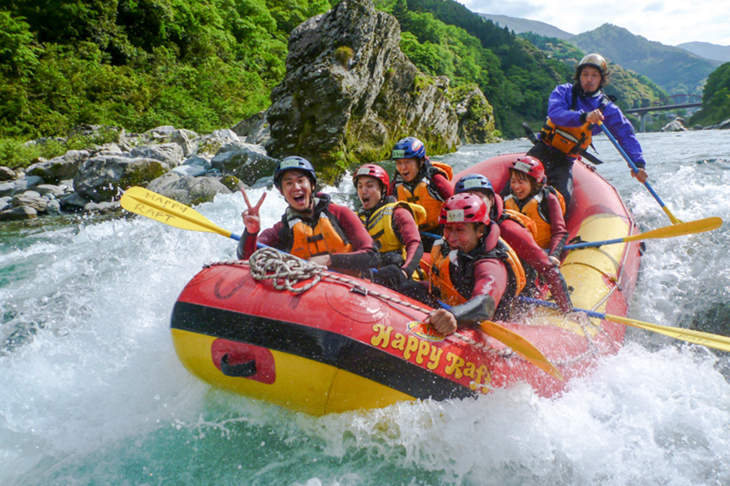
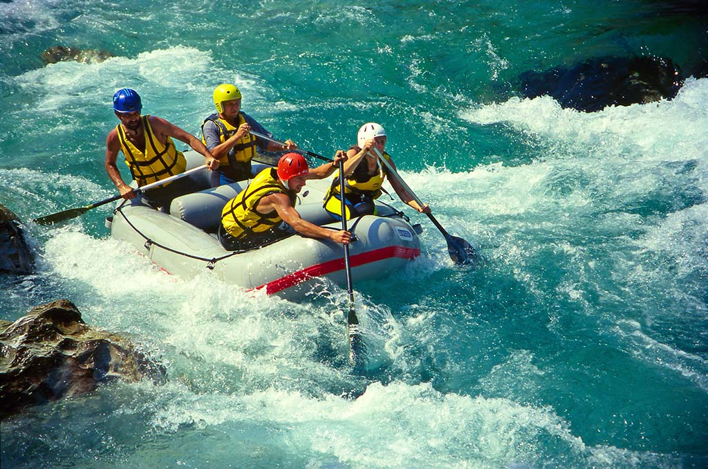
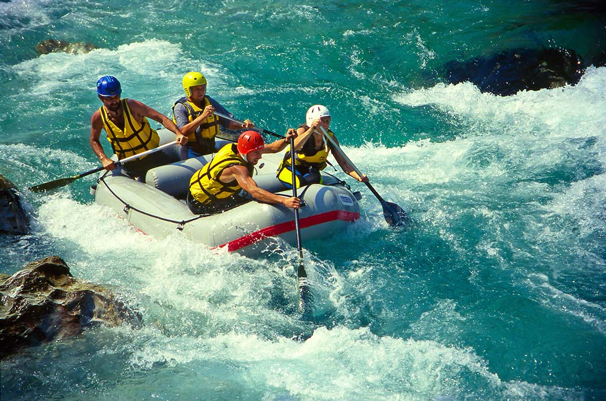

Our purpose as a company is giving you a great water rafting experience by maneuvering and navigating the raft through rapids or turbulent waters on the Tampaon river in Mexico, Veracruz.

Adventures down the river.
History
The tampaon river is s formed by the confluence of the Santa Maria River and the Rio Verde, which originate on the Mexican Plateau and flow through canyons in the Sierra Madre Oriental. The rivers join in the Sierra to form the Tampaón and it continues east, emerging onto the Gulf Coastal Plain, where it is joined by tributaries that drain the wetter eastern slopes of the Sierra Madre. Extraordinary scenery with turquoise waters in the 5th canyon of the “Santa Maria” system. Come have fun on this exotic river
Adventure Awaits You!


 
